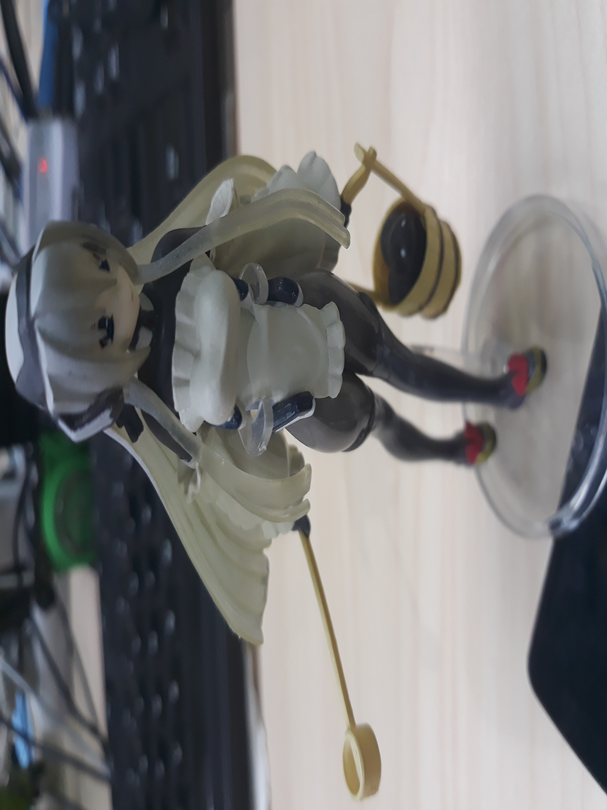
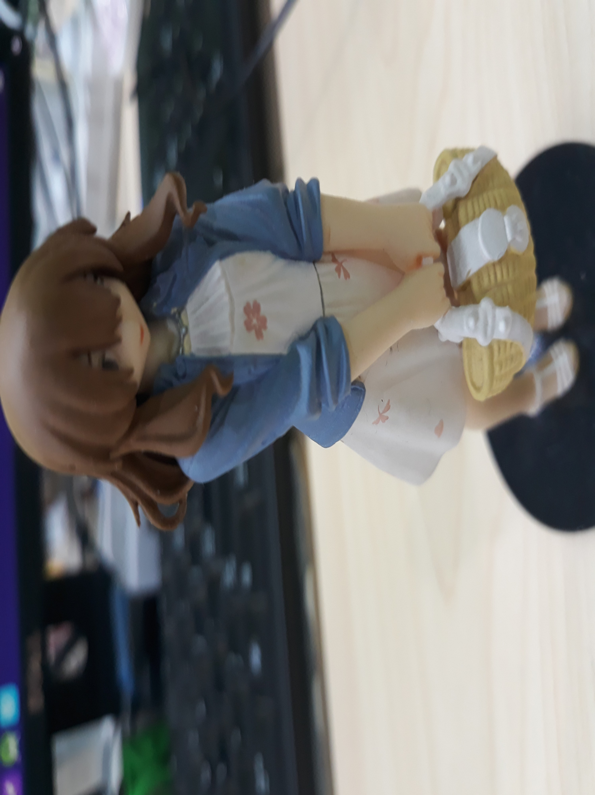

<!DOCTYPE html>
<html lang="en">
<head>
  <meta charset="UTF-8">
  <meta name="viewport" content="width=device-width, initial-scale=1.0">
  <meta http-equiv="X-UA-Compatible" content="ie=edge">
  <title>Document</title>
  <!-- <script src="https://cdn.jsdelivr.net/npm/exif-js"></script> -->
</head>
<style>
  img{
    width: 500px;
    height: auto
  }
  .box{
    width: 500px;
    height:  600px;
    border: 1px solid red;
  }
</style>
<body>
  <!-- https://zhubangbang.com/ssl/demo-img/transform-origin-demo.jpg -->
  <!--  -->
  <!--  -->
  <!-- 
   -->

  
  
  <!-- 
   -->
<div class="box">

</div>
<script src="./exif.js"></script>
  <script>
    var $fileImg = document.getElementById('img');

    var url = 'http://54.222.148.146:8000/s/files/fe/09/fe09617e2565486a5f7f5a0249be3ee1b9fdfdc6/F3VnBdFLaIuoXmhaFt4NWL5W3pmy2xRWKXaDuiKv/JPEG_20181024_142332_-534957770.jpg'

    window.onload = function() {
        var img = new Image();
        img.crossOrigin = '';
        img.onload = function() {
            var dataUrl = getBase64Image(img);
            img.src = dataUrl;
            console.log(img.src, 'wukai')
            EXIF.getData(img, function() {
                //   console.log(this, 'wukai')
                Orientation = EXIF.getTag(this, "Orientation");
                // console.log("拍照Orientation值是：",Orientation);
                if(Orientation===6){

                    // console.log("这张图片是IOS垂直拍的");
                    //image-orientation: from-image;
                    // img.css({"image-orientation":"from-image"});
                    img.style.cssText = `transform:rotate(90deg)`
                    //   console.log(111111)
                    getImgData(this, Orientation, function(imgData) {
                        // console.log(imgData, 22222)
                        var box = document.querySelector('.box')
                        box.style.cssText = `background-image: url(${imgData});background-size: cover; background-position: center center;`
                    })
                }
            });
        }

        img.src = url


      
    }

function getBase64Image(img, width, height) {
    var canvas = document.createElement("canvas");
    canvas.width = width ? width : img.width;
    canvas.height = height ? height : img.height;

    var ctx = canvas.getContext("2d");
    ctx.drawImage(img, 0, 0, canvas.width, canvas.height);
    var dataURL = canvas.toDataURL();
    return dataURL;
}


function getImgData(image, dir, callBack) { // 修正图片方向方法
  var degree = 0, drawWidth, drawHeight, width, height;
  drawWidth = image.naturalWidth;
  drawHeight = image.naturalHeight;
  //以下改变一下图片大小
  var maxSide = Math.max(drawWidth, drawHeight);
  if (maxSide > 1024) {
      var minSide = Math.min(drawWidth, drawHeight);
      minSide = minSide / maxSide * 1024;
      maxSide = 1024;
      if (drawWidth > drawHeight) {
          drawWidth = maxSide;
          drawHeight = minSide;
      } else {
          drawWidth = minSide;
          drawHeight = maxSide;
      }
  }
  var canvas = document.createElement('canvas');
  canvas.width = width = drawWidth;
  canvas.height = height = drawHeight;
  var context = canvas.getContext('2d');
  //判断图片方向，重置canvas大小，确定旋转角度，iphone默认的是home键在右方的横屏拍摄方式
  switch (dir) {
  //iphone横屏拍摄，此时home键在左侧
      case 3:
          degree = 180;
          drawWidth = -width;
          drawHeight = -height;
          break;
  //iphone竖屏拍摄，此时home键在下方(正常拿手机的方向)
      case 6:
          canvas.width = height;
          canvas.height = width;
          degree = 90;
          drawWidth = width;
          drawHeight = -height;
          break;
  //iphone竖屏拍摄，此时home键在上方
      case 8:
          canvas.width = height;
          canvas.height = width;
          degree = 270;
          drawWidth = -width;
          drawHeight = height;
          break;
  }
  //使用canvas旋转校正
  context.rotate(degree * Math.PI / 180);
  context.drawImage(image, 0, 0, drawWidth, drawHeight);
  //返回校正图片
  if(typeof callBack === 'function') callBack(canvas.toDataURL("image/jpeg", .8));
}


var commonMethods = {
    getImgData: function (img, dir, next) {
        var image = new Image();
        image.onload = function () {
            var degree = 0, drawWidth, drawHeight, width, height;
            drawWidth = this.naturalWidth;
            drawHeight = this.naturalHeight;
//以下改变一下图片大小
            var maxSide = Math.max(drawWidth, drawHeight);
            if (maxSide > 1024) {
                var minSide = Math.min(drawWidth, drawHeight);
                minSide = minSide / maxSide * 1024;
                maxSide = 1024;
                if (drawWidth > drawHeight) {
                    drawWidth = maxSide;
                    drawHeight = minSide;
                } else {
                    drawWidth = minSide;
                    drawHeight = maxSide;
                }
            }
            var canvas = document.createElement('canvas');
            canvas.width = width = drawWidth;
            canvas.height = height = drawHeight;
            var context = canvas.getContext('2d');
//判断图片方向，重置canvas大小，确定旋转角度，iphone默认的是home键在右方的横屏拍摄方式
            switch (dir) {
//iphone横屏拍摄，此时home键在左侧
                case 3:
                    degree = 180;
                    drawWidth = -width;
                    drawHeight = -height;
                    break;
//iphone竖屏拍摄，此时home键在下方(正常拿手机的方向)
                case 6:
                    canvas.width = height;
                    canvas.height = width;
                    degree = 90;
                    drawWidth = width;
                    drawHeight = -height;
                    break;
//iphone竖屏拍摄，此时home键在上方
                case 8:
                    canvas.width = height;
                    canvas.height = width;
                    degree = 270;
                    drawWidth = -width;
                    drawHeight = height;
                    break;
            }
//使用canvas旋转校正
            context.rotate(degree * Math.PI / 180);
            context.drawImage(this, 0, 0, drawWidth, drawHeight);
//返回校正图片
            next(canvas.toDataURL("image/jpeg", .8));
        }
        image.src = img.src;
    },
//  使用canvas对大图片进行压缩
    compress: function (img) {
        //    用于压缩图片的canvas
        var canvas = document.createElement("canvas");
        var ctx = canvas.getContext('2d');
        //    瓦片canvas
        var tCanvas = document.createElement("canvas");
        var tctx = tCanvas.getContext("2d");

        var initSize = img.src.length;
        var width = img.width;
        var height = img.height;
        //如果图片大于四百万像素，计算压缩比并将大小压至400万以下
        var ratio;
        if ((ratio = width * height / 4000000) > 1) {
            ratio = Math.sqrt(ratio);
            width /= ratio;
            height /= ratio;
        } else {
            ratio = 1;
        }
        canvas.width = width;
        canvas.height = height;
//        铺底色
        ctx.fillStyle = "#fff";
        ctx.fillRect(0, 0, canvas.width, canvas.height);
        //如果图片像素大于100万则使用瓦片绘制
        var count;
        if ((count = width * height / 1000000) > 1) {
            count = ~~(Math.sqrt(count) + 1); //计算要分成多少块瓦片
//            计算每块瓦片的宽和高
            var nw = ~~(width / count);
            var nh = ~~(height / count);
            tCanvas.width = nw;
            tCanvas.height = nh;
            for (var i = 0; i < count; i++) {
                for (var j = 0; j < count; j++) {
                    tctx.drawImage(img, i * nw * ratio, j * nh * ratio, nw * ratio, nh * ratio, 0, 0, nw, nh);
                    ctx.drawImage(tCanvas, i * nw, j * nh, nw, nh);
                }
            }
        } else {
            ctx.drawImage(img, 0, 0, width, height);
        }
        //进行最小压缩
        var ndata = canvas.toDataURL('image/jpeg', 0.1);
        console.log('压缩前：' + initSize);
        console.log('压缩后：' + ndata.length);
        console.log('压缩率：' + ~~(100 * (initSize - ndata.length) / initSize) + "%");
        tCanvas.width = tCanvas.height = canvas.width = canvas.height = 0;
        return ndata;
    },
    //图片转化 装入formdata里
    upload: function (basestr, type) {
        var text = window.atob(basestr.split(",")[1]);
        var buffer = new Uint8Array(text.length);
        for (var i = 0; i < text.length; i++) {
            buffer[i] = text.charCodeAt(i);
        }
        var data = this.getBlob([buffer], type);
        // var xhr = new XMLHttpRequest();
        var formdata = this.getFormData();
        formdata.append('imageFile', data);
        return formdata;
    },
    /**
     * 获取blob对象的兼容性写法
     * @param buffer
     * @param format
     * @returns {*}
     */
    getBlob: function (buffer, format) {
        try {
            return new Blob(buffer, {type: format});
        } catch (e) {
            var bb = new (window.BlobBuilder || window.WebKitBlobBuilder || window.MSBlobBuilder);
            buffer.forEach(function (buf) {
                bb.append(buf);
            });
            return bb.getBlob(format);
        }
    },
    /**
     * 获取formdata
     */
    getFormData: function () {
        var isNeedShim = ~navigator.userAgent.indexOf('Android')
            && ~navigator.vendor.indexOf('Google')
            && !~navigator.userAgent.indexOf('Chrome')
            && navigator.userAgent.match(/AppleWebKit\/(\d+)/).pop() <= 534;
        return isNeedShim ? new this.FormDataShim() : new FormData();
    },
    /**
     * formdata 补丁, 给不支持formdata上传blob的android机打补丁
     * @constructor
     */
    FormDataShim: function () {
        console.warn('using formdata shim');
        var o = this,
            parts = [],
            boundary = Array(21).join('-') + (+new Date() * (1e16 * Math.random())).toString(36),
            oldSend = XMLHttpRequest.prototype.send;
        this.append = function (name, value, filename) {
            parts.push('--' + boundary + '\r\nContent-Disposition: form-data; name="' + name + '"');
            if (value instanceof Blob) {
                parts.push('; filename="' + (filename || 'blob') + '"\r\nContent-Type: ' + value.type + '\r\n\r\n');
                parts.push(value);
            }
            else {
                parts.push('\r\n\r\n' + value);
            }
            parts.push('\r\n');
        };
        // Override XHR send()
        XMLHttpRequest.prototype.send = function (val) {
            var fr,
                data,
                oXHR = this;
            if (val === o) {
                // Append the final boundary string
                parts.push('--' + boundary + '--\r\n');
                // Create the blob
                data = this.getBlob(parts);
                // Set up and read the blob into an array to be sent
                fr = new FileReader();
                fr.onload = function () {
                    oldSend.call(oXHR, fr.result);
                };
                fr.onerror = function (err) {
                    throw err;
                };
                fr.readAsArrayBuffer(data);
                // Set the multipart content type and boudary
                this.setRequestHeader('Content-Type', 'multipart/form-data; boundary=' + boundary);
                XMLHttpRequest.prototype.send = oldSend;
            }
            else {
                oldSend.call(this, val);
            }
        };
    }
};

  </script>
</body>
</html>